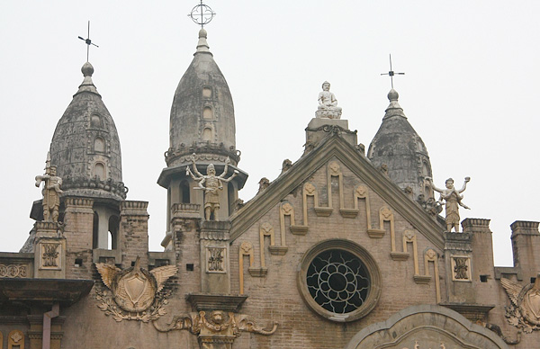

多亏了尹老师的汉口老建筑攻略和Y同学的陪伴，我们才能在半天时间里，按图索骥，把中山大道，胜利街，沿江大道附近的老建筑逛了个遍。其实有些地方，我们在没有攻略的前一晚已经路过，只因毫无概念，没有察觉。汉口沿江这一带是历史上的五国租界，这里的洋房鳞次节比，从江汉关开始往北，有日清洋行，横滨正金银行，太古洋行，汇丰银行，花旗银行，怡和洋行，亚细亚火油公司（即壳牌石油公司），华俄道胜银行，美国大使馆，德国大使馆……有点像缩小版的上海外滩。江边的建筑现多为银行和政府机构所用，保存较好，但往里走，小路上的建筑，境遇就比较堪忧了。除了黎黄陂路建成了＂街头博物馆＂，其他街道的老建筑，拆的拆，修的修，外墙颜色黯淡，爬满电线，不少居民直接把衣服晾在杂乱低垂的电线上。

古德寺奇特的藏在偏僻市井里。它是禅院，却完全看不出禅院的样子。它的核心建筑圆通宝殿是仿缅甸阿兰陀寺设计，运用了古罗马建筑的结构，内外墙之间的回形步廊和许多方柱，又依稀可见希腊神庙的风韵，立面墙上的圆窗和长窗，却是基督教堂的建筑样式。古德寺混合了欧亚宗教建筑的特色，融大乘、小乘和藏密三大佛教流派于一身，在汉传佛寺中实属罕见。去的时候正好赶上圆通宝殿里的尼姑们唱经，随手录了一段。

武汉大学的建筑也挺好，只是大门前路在修，老牌坊被拆，山顶的老图书馆也在修。通向老图书馆的几条阶梯两边是古旧的老斋舍，从民国19年建校之初时期一直沿用至今，16个门洞以千字文里的“天地玄黄、宇宙洪荒、日月盈久、辰宿列张”命斋名。不自觉的会想像起几位短发女生，身穿蓝灰的民国学生裙装，抱着书，从门洞里走出来的情景。 走到樱园时下起了雨，那时的校园显得特别安静。漫步到凌波门时，看见门外的东湖湮没在一片水雾中，只能日后再来拜访了。